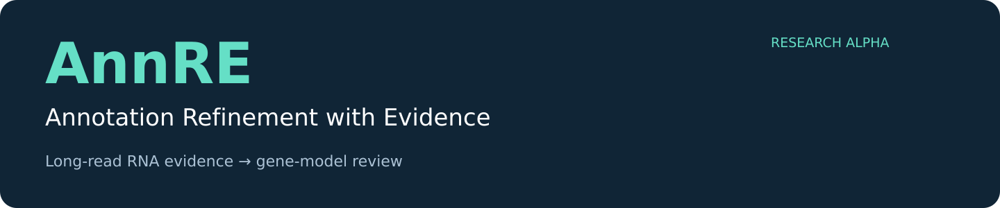
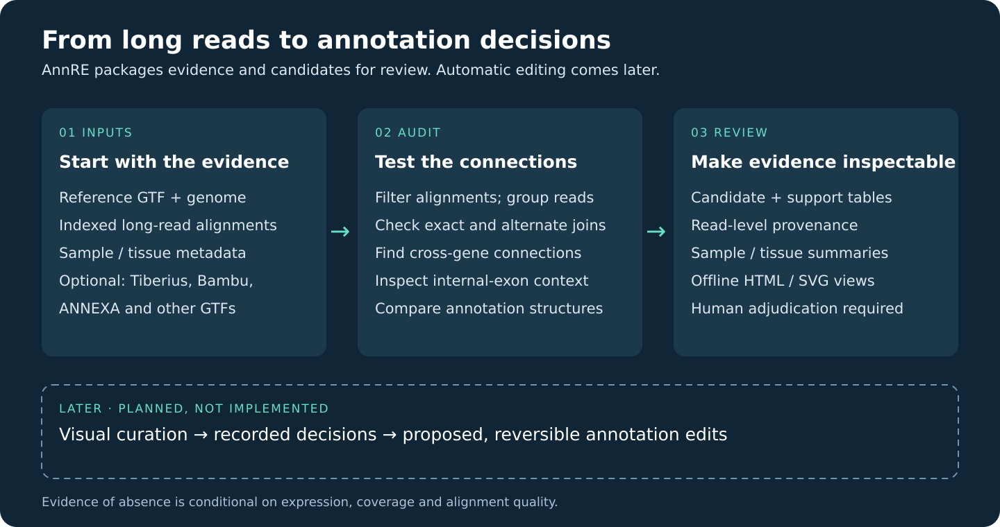

Evidence first. Annotation decisions you can trace.
Long-read RNA evidence for reviewing potential fused gene models, cross-gene connections and alternative exon structures.
105 genes
BSF candidates for review
116 joins
Retained in Bambu and ANNEXA outputs
72 libraries
Grouped into 68 sample IDs
These are candidates, not confirmed annotation errors. Counts come from a separate project-wide census; the portable alpha has been demonstrated on a ten-gene panel.
